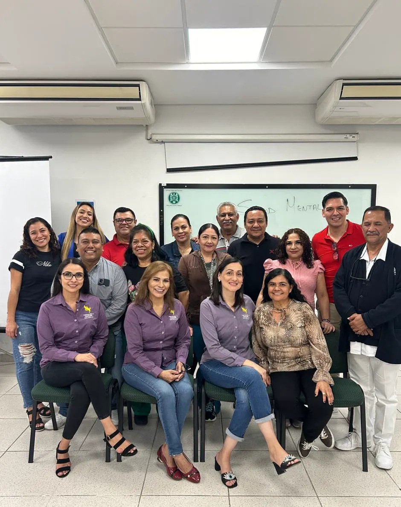
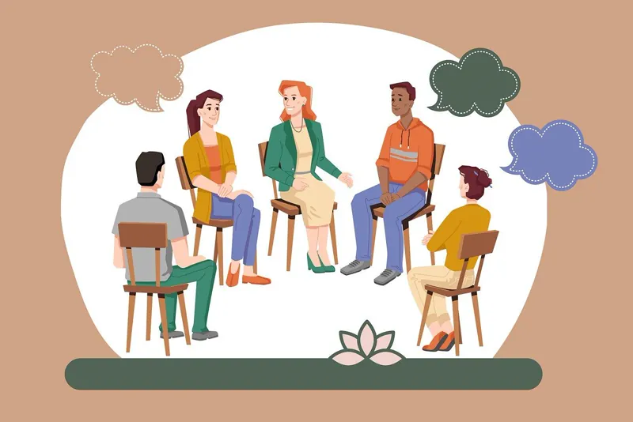
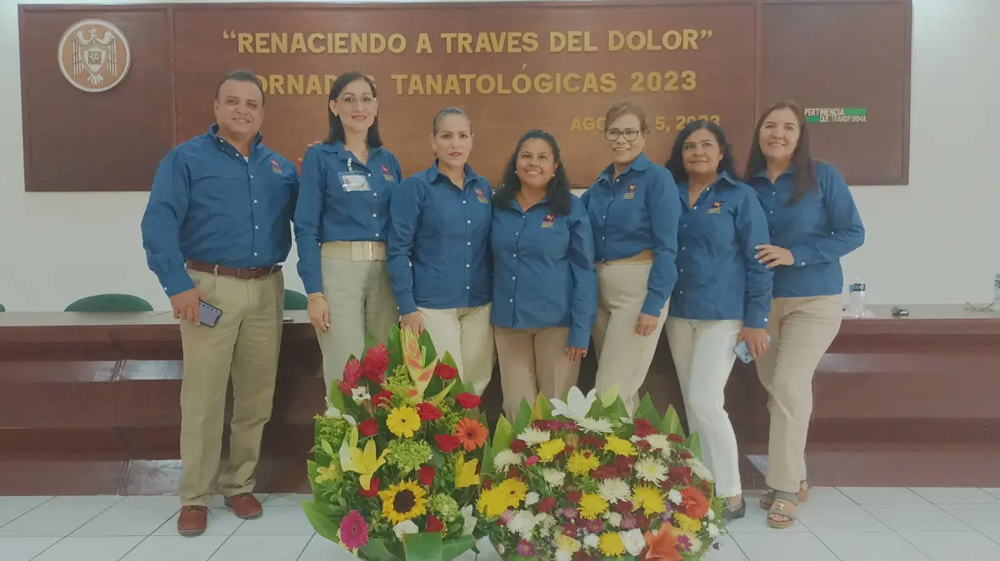
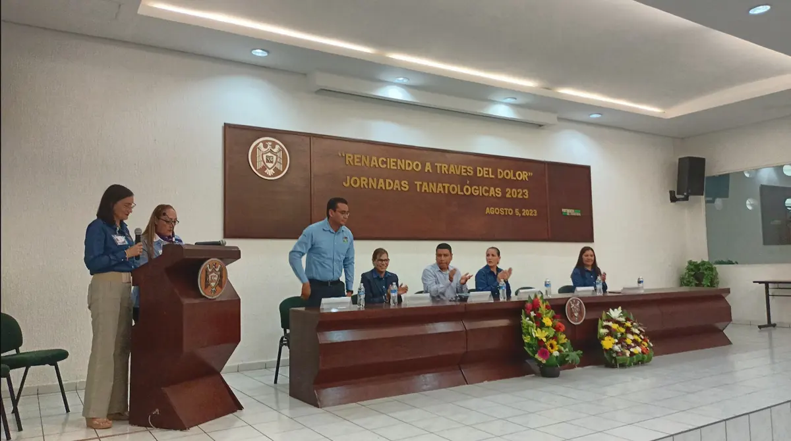
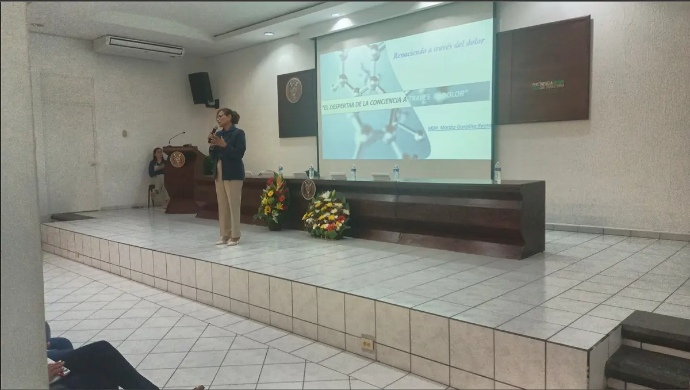
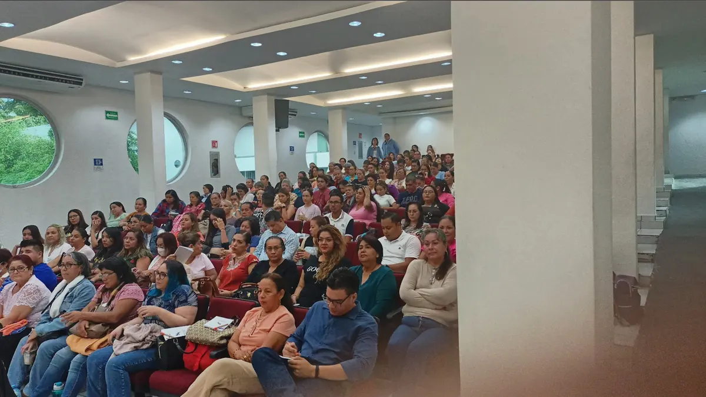
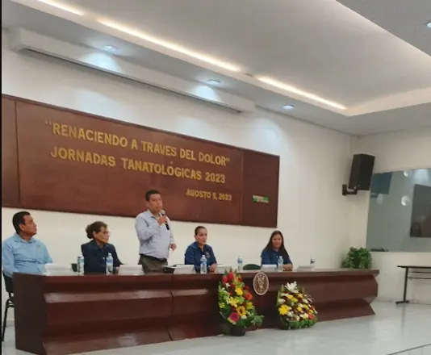
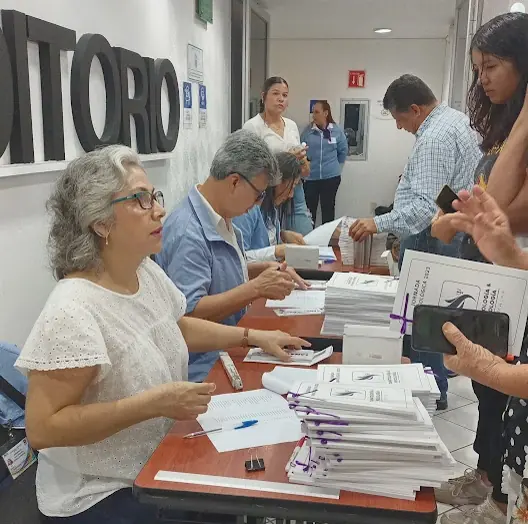

Intervención tanatológica y psicológica
Acompañamiento personalizado para personas, parejas y familias ante una pérdida significativa.
Solicitar informaciónApoyamos a personas y familias ante una pérdida significativa, promoviendo bienestar emocional y comunitario.
Atención psicológica y acompañamiento tanatológico de manera personalizada, en pareja y en familia.

Atención, comunidad y formación para transitar pérdidas significativas con apoyo profesional.
Acompañamiento personalizado para personas, parejas y familias ante una pérdida significativa.
Solicitar información
Un espacio comunitario para compartir y acompañarse durante el proceso de duelo.
Solicitar informaciónActividades de capacitación y desarrollo alrededor del morir, la muerte y el duelo.
Solicitar informaciónSomos una institución no lucrativa enfocada en brindar atención tanatológica y psicológica a toda persona que tenga una pérdida significativa en su vida. Estamos comprometidos profesionalmente con la capacitación, el desarrollo y la investigación sobre el morir, la muerte, el duelo y lo que hay después de la muerte.
Ser la institución de tanatología y psicología de mayor relevancia y liderazgo en la región, enfocada siempre en el desarrollo continuo y la excelencia de su personal, comprometido con proporcionar un servicio de total satisfacción a la comunidad doliente.
Personas con experiencia en atención, formación y acompañamiento humano.
Lic. en Enfermería
Coordinadora académica del diplomado Tanatología Clínica Integral
“Renaciendo a través del dolor”, un encuentro de formación y comunidad realizado el 5 de agosto de 2023.






Escríbenos para conocer las opciones de acompañamiento disponibles.
Solicitar apoyo Tanatología y Psicología Colima I.A.P. Árbol Benjamín 513 J. Pimentel Llerenas, 28077 Colima, Col. +52 312 177 0831